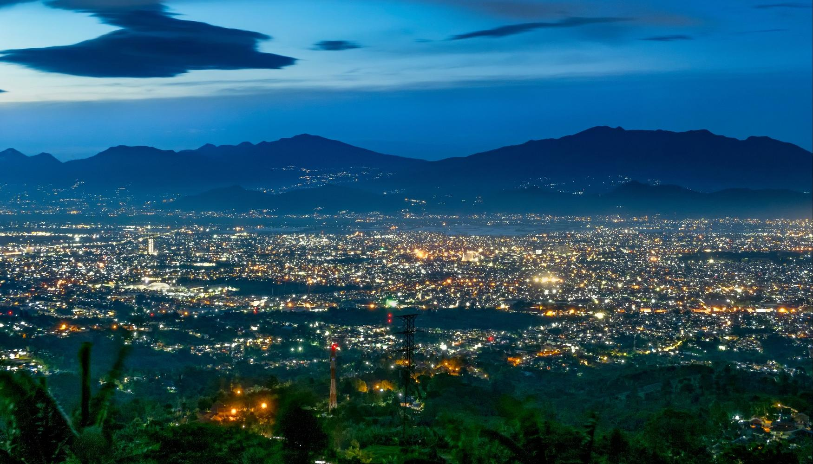
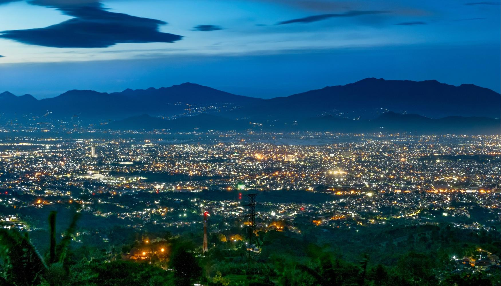

Bandung adalah kota yang memadukan kesejukan alam pegunungan dengan semarak kehidupan modern. Dikenal sebagai Kota Kembang, Bandung telah lama menjadi destinasi favorit wisatawan domestik maupun mancanegara berkat udaranya yang segar dan suasananya yang romantis. Dikelilingi oleh perbukitan hijau, kota ini menawarkan panorama alam yang memukau, mulai dari hamparan kebun teh di Lembang, keindahan Kawah Putih di Ciwidey, hingga pesona Gunung Tangkuban Perahu yang sarat legenda.
Selain keindahan alamnya, Bandung juga dikenal sebagai pusat mode dan kuliner di Indonesia. Beragam factory outlet, distro kreatif, dan kafe estetik tersebar di seluruh penjuru kota, menjadikan Bandung surga belanja bagi pecinta gaya hidup modern. Kuliner khas seperti batagor, seblak, surabi, dan nasi timbel menjadi daya tarik tersendiri yang memanjakan lidah setiap pengunjung.
Tak hanya itu, Bandung juga memiliki banyak tempat wisata edukatif dan kekinian seperti Farm House, The Great Asia Africa, hingga Floating Market yang cocok untuk liburan keluarga. Dengan perpaduan alam yang indah, budaya yang hangat, dan gaya hidup urban yang dinamis, Bandung menghadirkan pengalaman wisata yang lengkap — menenangkan sekaligus menyenangkan.